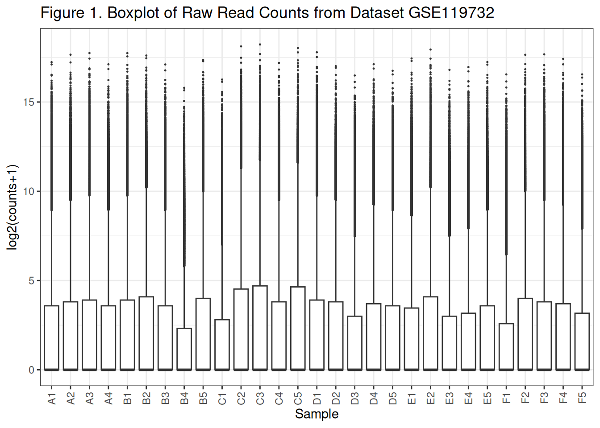
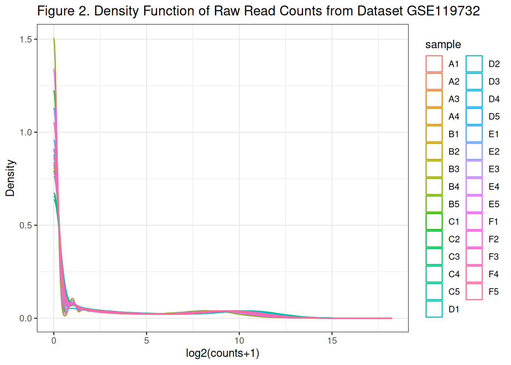
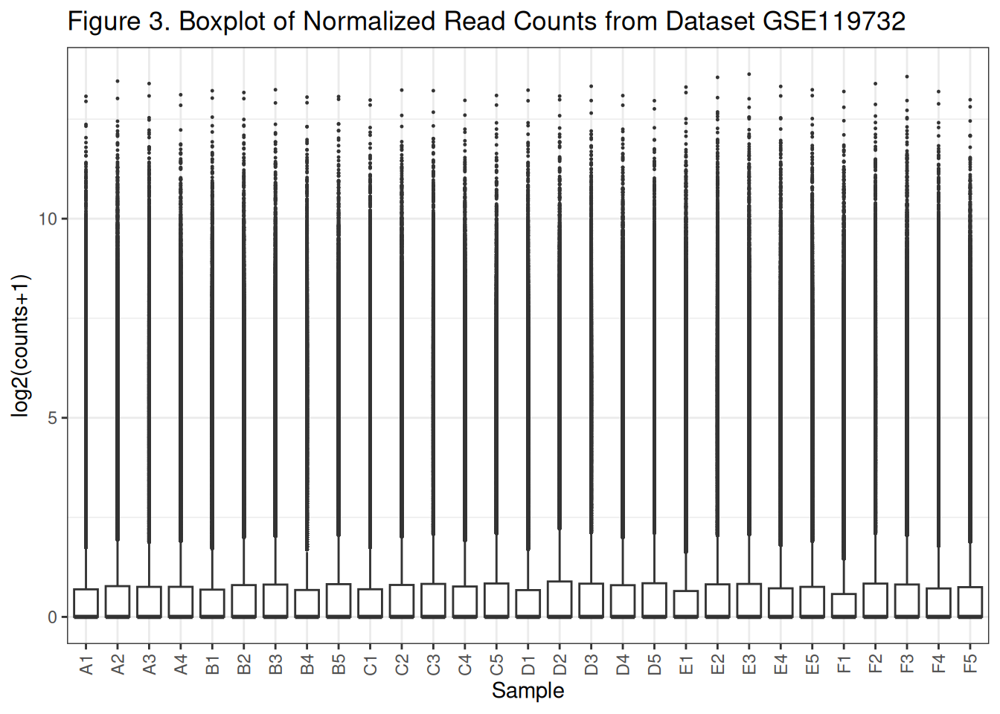
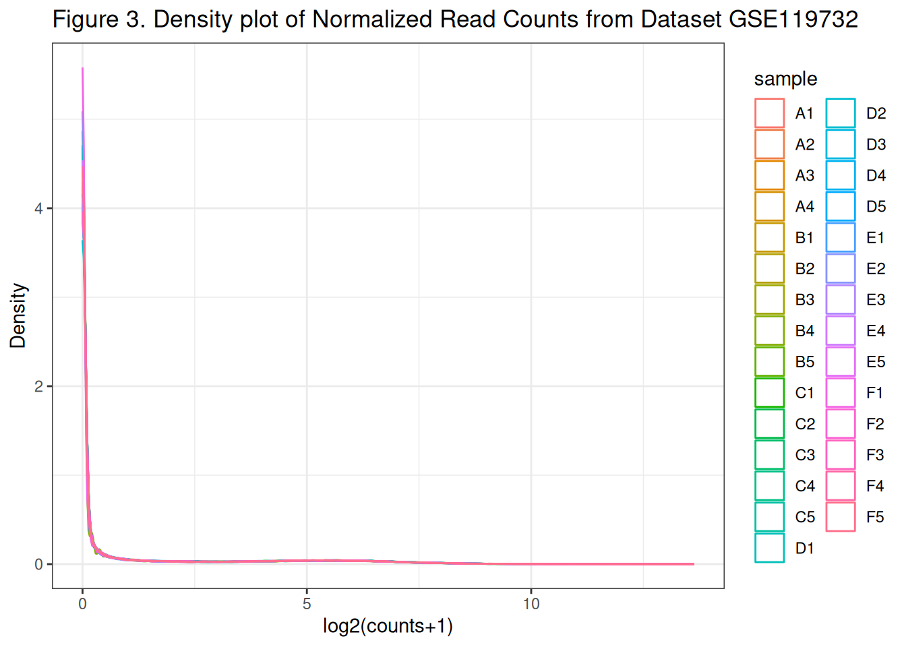
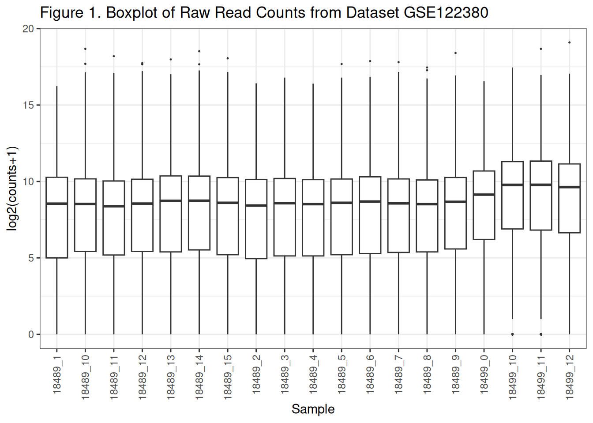
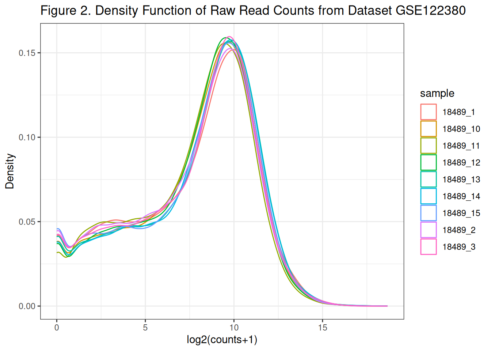
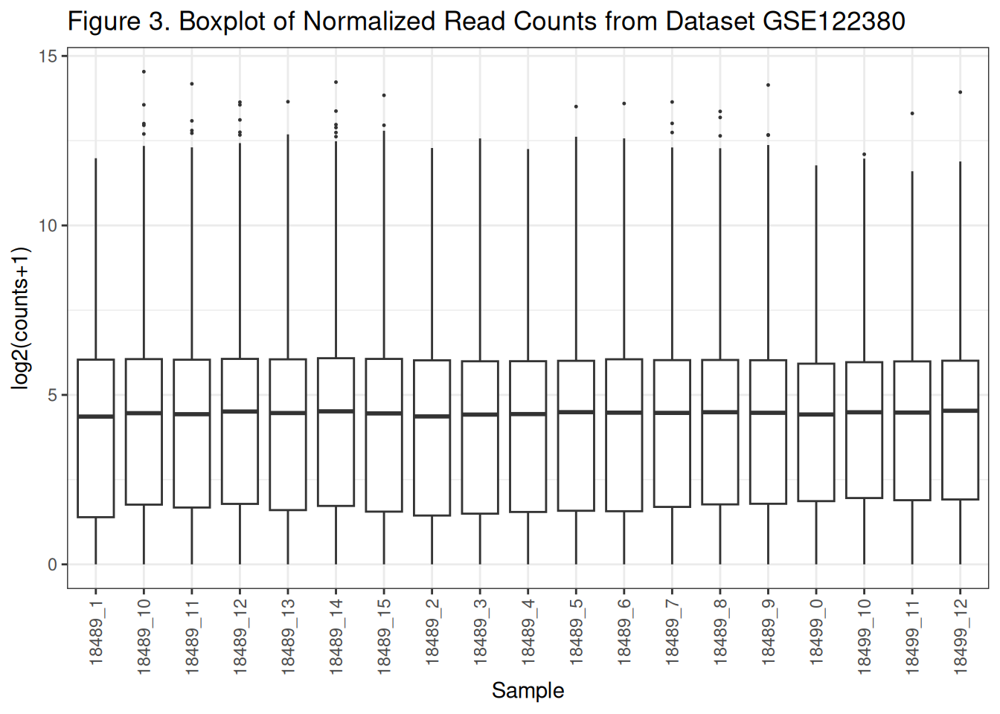
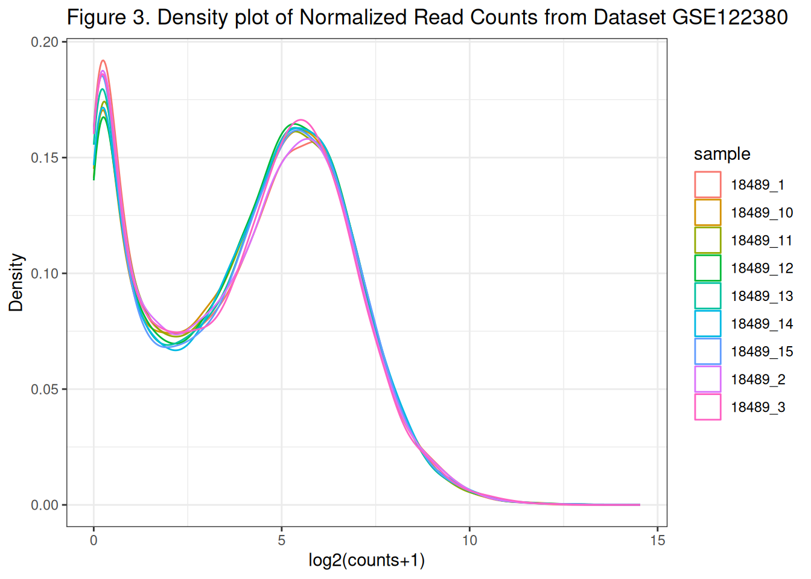

Chapter 6 Exercises
These are intended to be done after completing the worked examples.
6.1 Exercise 1 — https://www.ncbi.nlm.nih.gov/geo/query/acc.cgi?acc=GSE119732
Using GSE119732,
- Map the distribution of the samples as a box plot and a density plot using only the raw data.
- Add colours to the plot separating the different variables in the model
- Filter out lowly expressed genes and re plot the distributions.
# get GEO data
dir.create("data", showWarnings = FALSE)
supp <- GEOquery::getGEOSuppFiles(
"GSE119732",
makeDirectory = TRUE,
baseDir = "data"
)## Setting options('download.file.method.GEOquery'='auto')## Setting options('GEOquery.inmemory.gpl'=FALSE)## Using locally cached version of supplementary file(s) GSE119732 found here:
## data/GSE119732/GSE119732_count_table_RNA_seq.txt.gzcounts_file <- file.path("data", "GSE119732", "GSE119732_count_table_RNA_seq.txt.gz")
stopifnot(file.exists(counts_file))
raw_counts <- readr::read_table(counts_file, show_col_types = FALSE)
raw_counts <- as.data.frame(raw_counts)
row.names(raw_counts) <- raw_counts$gene_id
raw_counts$gene_id <- NULL##
## Attaching package: 'dplyr'## The following objects are masked from 'package:stats':
##
## filter, lag## The following objects are masked from 'package:base':
##
## intersect, setdiff, setequal, unionlibrary(tidyr)
# suppose 'mat' is a gene x sample matrix (numeric)
plot_box <- function(mat, main = "", ylab = "log2(counts+1)") {
df <- as.data.frame(mat)
df_long <- df |>
mutate(gene = rownames(df)) |>
pivot_longer(-gene, names_to = "sample", values_to = "value") |>
mutate(value = log2(value + 1))
ggplot(df_long, aes(x = sample, y = value)) +
geom_boxplot(outlier.size = 0.2) +
theme_bw() +
theme(axis.text.x = element_text(angle = 90, vjust = 0.5, hjust = 1)) +
labs(title = main, x = "Sample", y = ylab)
}
# define a plot density function
plot_density <- function(input_data, main_title = "Density Function of Read Counts") {
df <- as.data.frame(input_data)
df_long <- df |>
mutate(gene = rownames(df)) |>
pivot_longer(-gene, names_to = "sample", values_to = "value") |>
mutate(value = log2(value + 1))
ggplot(df_long, aes(x = value, colour = sample)) +
geom_density() +
theme_bw() +
labs(title = main_title, x = "log2(counts+1)", y = "Density")
}# check boxplot distribution of the current dataset
plot_box(raw_counts, "Figure 1. Boxplot of Raw Read Counts from Dataset GSE119732")
# check density distribution of the current dataset
plot_density(raw_counts, "Figure 2. Density Function of Raw Read Counts from Dataset GSE119732")
## Loading required package: limmadge <- DGEList(counts = raw_counts)
dge <- calcNormFactors(dge, method = "TMM")
normcpm <- cpm(dge, prior.count = 1)
plot_box(normcpm, "Figure 3. Boxplot of Normalized Read Counts from Dataset GSE119732")

6.2 Exercise 2 — https://www.ncbi.nlm.nih.gov/geo/query/acc.cgi?acc=GSE122380
Using GSE122380, confirm whether the ID column contains Ensembl IDs with version suffixes.
- Map the distribution of the samples as a box plot and a density plot using only the raw data.
- Add colours to the plot separating the different variables in the model
- Filter out lowly expressed genes and re plot the distributions.
# get GEO data
dir.create("data", showWarnings = FALSE)
supp <- GEOquery::getGEOSuppFiles(
"GSE122380",
makeDirectory = TRUE,
baseDir = "data"
)## Using locally cached version of supplementary file(s) GSE122380 found here:
## data/GSE122380/GSE122380_raw_counts.txt.gzcounts_file <- file.path("data", "GSE122380", "GSE122380_raw_counts.txt.gz")
stopifnot(file.exists(counts_file))
raw_counts <- readr::read_table(counts_file, show_col_types = FALSE)
raw_counts <- as.data.frame(raw_counts)
row.names(raw_counts) <- raw_counts$Gene_id
raw_counts$Gene_id <- NULL# check boxplot distribution of the current dataset
plot_box(raw_counts[, 2:20], "Figure 1. Boxplot of Raw Read Counts from Dataset GSE122380")
# check density distribution of the current dataset
plot_density(raw_counts[, 2:10], "Figure 2. Density Function of Raw Read Counts from Dataset GSE122380")
library(edgeR)
dge <- DGEList(counts = raw_counts)
dge <- calcNormFactors(dge, method = "TMM")
normcpm <- cpm(dge, prior.count = 1)
plot_box(normcpm[, 2:20], "Figure 3. Boxplot of Normalized Read Counts from Dataset GSE122380")
plot_density(normcpm[, 2:10], "Figure 3. Density plot of Normalized Read Counts from Dataset GSE122380")
6.3 Exercise 3 -
Can you use the worked example to process the above two GEO records? How?
Yes, but I had to make some slight changes. However, the normalization process was quite similar for both and successfully led to the normalization of these datasets. In terms of plotting, the second dataset had many more samples so plotting the values was easier with a subset of the data.